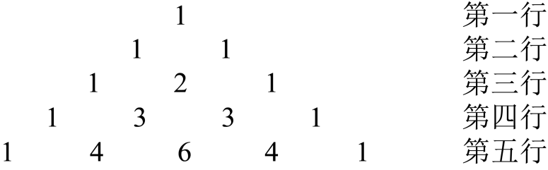
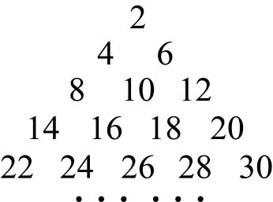
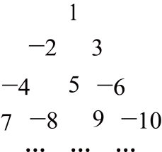
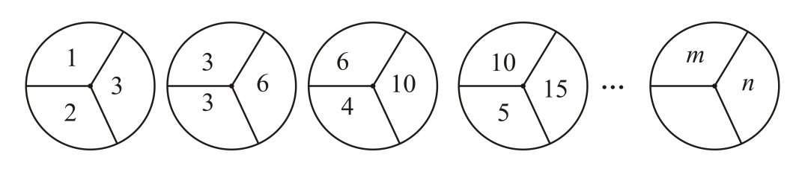
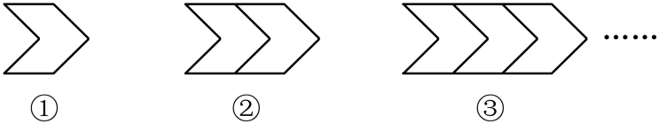
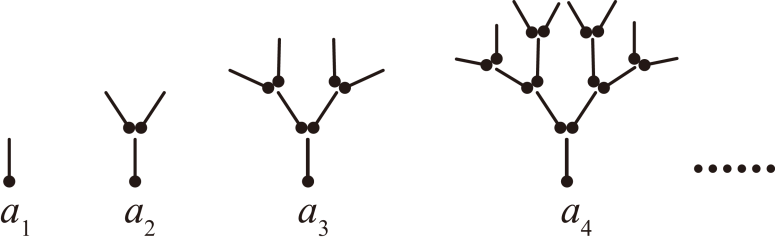
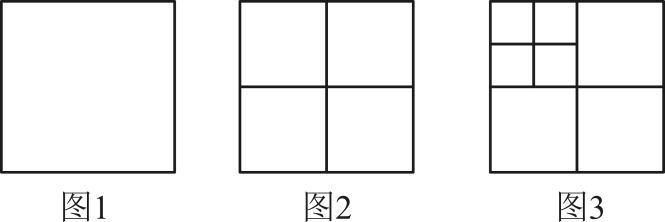
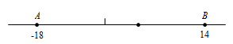
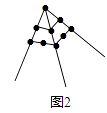
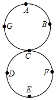

专题02 有理数中的规律（代数推理）问题（举一反三专项训练）
【北师大版2024】

【题型1 数字规律】 1
【题型2 数阵规律】 1
【题型3 数表规律】 2
【题型4 数图规律】 3
【题型5 运算规律】 4
【题型6 周期规律】 5
【题型7 递进规律】 6
【题型8 数形规律】 7

【题型1 数字规律】
【例1】（24-25七年级上·广东珠海·期中）一组数1,3,7,15,31…按下列分组．第一组(1、3、7)，第二组(1、3、7、15)，第三组(1、3、7、15、31)，…按此规律排列，则第11组所有数之和为（ ）
A．213−12 B．214−15 C．213−14 D．214−13
【变式1-1】一列数据按1，−2，3，−4，5，−6……的规律书写，则第2021个数字为（ ）
A．2021 B．−2021 C．2022 D．−2022
【变式1-2】（24-25六年级上·黑龙江哈尔滨·期末）观察数组：12、23、1、85…依此规律，第6个数是 ．
【变式1-3】（23-24七年级上·福建福州·期中）1，2，4，8，16，…，是按一定规律排列的一组数，则第2017个数是（ ）
A．22015 B．22016 C．22017 D．4032
【题型2 数阵规律】
【例2】（23-24七年级上·黑龙江牡丹江·期中）杨辉三角，又称贾宪三角形，帕斯卡三角形（1261）一书中用如图的三角形解释二项式和的乘方规律，比欧洲的相同发现要早三百多年．

按此规律排列，第七行第四个数的相反数与第八行第三个数的积是（ ）
A．−700 B．700 C．−420 D．420
【变式2-1】（23-24九年级上·广东汕头·期末）将全体正偶数排成一个三角形数阵:

按照以上排列的规律,则第10行从左向右的第3个数是 ．
【变式2-2】（23-24九年级下·黑龙江哈尔滨·开学考试）观察如图所示的三角形数阵，则第7行的最后一个数是 ．

【变式2-3】观察下面一组数：−1，2，−3，4，−5，6，…，将这组数排成如图的形式，按照如图规律排下去第10行从左边数第9个数是（ ）
A．−90 B．90 C．−91 D．91
【题型3 数表规律】
【例3】将自然数按以下规律排列，则2016所在的位置 （ ）
第1列 | 第2列 | 第3列 | 第4列 | … | |
第1行 | 1 | 2 | 9 | 10 | |
第2行 | 4 | 3 | 8 | 11 | |
第3行 | 5 | 6 | 7 | 12 | |
第4行 | 16 | 15 | 14 | 13 | |
第5行 | 17 | … | |||
… |
A．第45行第10列 B．第10行第45列
C．第44行第10列 D．第10行第44列
【变式3-1】（23-24七年级上·湖南湘西·期末）观察图中“品”字形中各数之间的规律，根据观察到的规律，求出b的值为 ．

【变式3-2】填在下面三个田字格内的数有相同的规律，根据此规律，C 的值是（ ）

A．76 B．82 C．86 D．108
【变式3-3】（23-24七年级上·江苏无锡·阶段练习）一组数按图中规律从左向右依次排列，则第9个图中m+n=（ ）

A．100 B．95 C．90 D．85
【题型4 数图规律】
【例4】（24-25九年级上·重庆·期中）如图，用规格相同的小棒摆成一组图案，图案①需要6根小棒，图案②需要10根小棒，图案③需要14根小棒，…，按此规律，则第8个图形中需要小棒的根数是（ ）

A．32 B．34 C．36 D．38
【变式4-1】（23-24七年级上·重庆沙坪坝·期末）如图，用规格相同的小棒摆成一组图案，第1个图案需要3根小棒，第2个图案需要5根小棒，第3个图案需要7根小棒，…，按此规律，则第2024个图案中需要小棒的根数是（ ）

A．4047 B．4048 C．4049 D．4050
【变式4-2】（2025·重庆开州·二模）如图是用大小相等的五角星按一定规律拼成的一组图案，第①个图案中有4颗五角星，第②个图案中有7颗，第③个图案中有10颗，…，按此规律排列下去，第⑧个图案中五角星的颗数是）（ ）

A．22 B．24 C．25 D．28
【变式4-3】（2025·重庆·模拟预测）如图，用火柴棒按照一定规律摆出一组图形，a1有1根，a2有3根，a3有7根……照此规律摆下去，a7的火柴棒根数是（ ）根

A．23 B．63 C．127 D．129
【题型5 运算规律】
【例5】（23-24七年级上·河北石家庄·阶段练习）观察下面的式子的排列规律，写出它后面的式子：
2+23=22×23，3+38=32×38，4+415=42×415， ．
【变式5-1】观察下列关于自然数的式子：
4×12−12 ①
4×22−32 ②
4×32−52 ③
…
根据上述规律，则第2018个式子的值是（ ）
A．8068 B．8069 C．8070 D．8071
【变式5-2】（23-24七年级上·辽宁阜新·阶段练习）观察下列式子：a1=31×4=11−14；a2=34×7=14−17；a3=37×10=17−110；a4=310×13=110−113；…，按此规律，计算a1+a2+a3+⋯+a2023= ．
【变式5-3】（22-23七年级上·天津和平·期中）观察下列各式的计算结果：
1−122=1−14=34=12×32；
1−132=1−19=89=23×43；
1−142=1−116=1516=34×54；
1−152=1−125=2425=45×65；
…
（1）用你发现的规律填写下列式子的结果：1−1102= × ．
（2）用你发现的规律计算：
(1−122)×(1−132)×(1−142)×...×(1−120202)×(1−120212)= ．
【题型6 周期规律】
【例6】某种金属元素铋(Bi)会进行衰变，每次在一个周期里，衰变的量是上一次量的一半．铋的周期（半衰期是1小时．设原有1克的未衰变的铋，则1小时后有0.5克发生了衰变，再过1小时又有0.25克发生了衰变，衰变一直按照这种规律发生下去，请问5小时后，共有多少克铋发生了衰变？（ ）
A．132 B．3132 C．1516 D．116
【变式6-1】公园的长堤一边有规三种树，依次按照2棵梨树、3棵柳树、2棵桃树的顺序排列．那么从第一棵柳树开始数，第125棵树是（ ）
A．桃树 B．柳树 C．梨树 D．无法确定
【变式6-2】）观察下列算式：21=2，22=4，23=8，24=16，25=32，26=64，27=128，通过观察，用你所发现的规律确定22011的个位数字是（ ）
A．2 B．4 C．6 D．8
【变式6-3】（24-25七年级上·辽宁铁岭·阶段练习）干支纪年法是中国历法上自古以来就一直使用的纪年方法．干支是天干和地支的总称，“甲、乙、丙、丁、戊、己、庚、辛、壬、癸”十个符号天干；“子、丑、寅、卯、辰、巳、午、未、申、酉、戌、亥”十二个符号叫地支．把干支（天干+地支）顺序相配（甲子、乙丑、丙寅…）正好六十为一周期，周而复始，循环记录，这就是俗称的“干支表”，公历年数先减三，除十余数是天干，改用十二除，余数便是地支年，如1997年是丁丑年，依据上述规律推断析2024应为 年．
1 | 2 | 3 | 4 | 5 | 6 | 7 | 8 | 9 | 10 | 11 | 12 | |
天干 | 甲 | 乙 | 丙 | 丁 | 戊 | 己 | 庚 | 辛 | 壬 | 癸 | ||
地支 | 子 | 丑 | 寅 | 卯 | 辰 | 巳 | 午 | 未 | 申 | 酉 | 戌 | 亥 |
【题型7 递进规律】
【例7】（24-25七年级上·陕西西安·阶段练习）如图，数轴上O，A两点的距离为12，一动点P从点A出发，按以下规律跳动：第1次跳动到AO的中点A1处，第2次从A1点跳动到A1O的中点A1处，第3次从A2点跳动到A2O的中点A3处．按照这样的规律继续跳动到点A4,A5,A6⋅⋅⋅An（n≥3，n是整数）处，问经过这样2024次跳动后的点A2024与A1A的中点的距离是（）
A．12−3×122022 B．9−3×122022 C．12−3×122023 D．9−3×122023
【变式7-1】（24-25七年级下·全国·假期作业）正方形图1作如下操作：第1次：分别连接各边中点如图2，得到5个正方形；第2次：将图2左上角正方形按上述方法再分割如图3，得到9个正方形，……，以此类推，根据以上操作，若要得到53个正方形，需要操作的次数是（ ）

A．12 B．13 C．14 D．15
【变式7-2】如图，数轴上两定点A、B对应的数分别为－18和14，现在有甲、乙两只电子蚂蚁分别从A、B同时出发，沿着数轴爬行，速度分别为每秒1．5个单位和1．7个单位，它们第一次相向爬行1秒，第二次反向爬行2秒，第三次相向爬行3秒，第四次反向爬行4秒，第五次相向爬行5秒，……，按如此规律，则它们第一次相遇所需的时间为（ ）

A．55秒 B．190秒 C．200秒 D．210秒
【变式7-3】（2025·安徽芜湖·模拟预测）将一张等边三角形纸片分成四个大小、形状一样的等边三角形（如图所示），记为第1次操作，然后将其中右下角的等边三角形又按同样的方法分成四部分，记为第2次操作．若每次都把右下角的等边三角形按此方法分成四部分，如此循环进行下去．

(1)若操作4次，则总共能得到_____个等边三角形．
(2)计算14+18+116+132+164+1128+1256+1512的值．
【题型8 数形规律】
【例8】如图是蜘蛛结网过程示意图，一只蜘蛛先以O为起点结六条线OA，OB，OC，OD，OE，OF后，再从线OA上某点开始按逆时针方向依次在OA，OB，OC，OD，OE，OF，OA，OB…上结网，若将各线上的结点依次记为：1，2，3，4，5，6，7，8，…，那么第200个结点在（ ）

A．线OA上 B．线OB上 C．线OC上 D．线OF上
【变式8-1】刚会数数的妹妹问你：“伸出左手，从大拇指开始，如图所示的那样数数字：1、2、3、4、…… 请问数到99时，是哪个手指？”你会告诉妹妹正确答案应该是（ ）

A．大拇指 B．食指 C．中指 D．无名指
【变式8-2】观察图形中点的个数，若按其规律再画下去，可以得到第105个图形中所有点的个数 为（ ）



A．1016个 B．11025个 C．11236个 D．22249个
【变式8-3】如图，两个半径都是4cm的圆有一个公共点C，一只蚂蚁由点A开始依A、B、C、D、E、F、C、G、A的顺序沿着圆周上的8段长度相等的路径绕行，蚂蚁在这8段路径上不断爬行，直到行走2014πcm后才停下来，则蚂蚁停的那一个点为( )

A．D点 B．E点 C．F点 D．G点